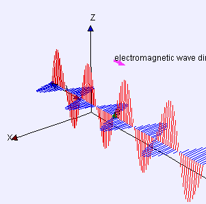
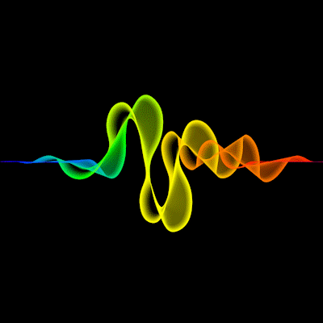

El electromagnetismo es la rama de la física que estudia la relación entre los campos eléctricos y magnéticos. Estas fuerzas son fundamentales en la naturaleza y en la tecnología moderna, donde son responsables de fenómenos como la generación de luz, el funcionamiento de motores y generadores, y la transmisión de señales en dispositivos electrónicos.
LA IMAGEN REPRESENTA COMO SE PROPAGAN LAS ONDAS (CEM) CON LIBERTAD DENTRO DEL PLANO CARTESIANO
⚡ La animación muestra ondas electromagnéticas propagándose en el espacio, con la oscilación simultánea de los campos eléctrico (rojo) y magnético (azul). ⚡
🔄 La animación representa el campo magnético generado por un cable con corriente eléctrica. Las líneas de campo magnético circulan alrededor del conductor. 🔄
🌈 Esta animación representa cómo una onda electromagnética (luz) cambia su dirección al pasar de un medio a otro, un fenómeno conocido como refracción. Esto conecta directamente el electromagnetismo con la óptica. 🌈

🌈 A su vez representa el fenómeno de la refracción de una onda electromagnética, como lo es la luz, al pasar de un medio a otro.
En la mitad izquierda del lienzo se observa la onda propagándose en un medio con menor índice de refracción, donde la velocidad de la luz es mayor. En la mitad derecha, al atravesar la línea blanca (superficie de separación entre medios), la onda cambia su velocidad y dirección debido al nuevo medio, simulando un índice de refracción mayor.
La refracción es una propiedad óptica que ocurre como consecuencia directa del comportamiento de las ondas electromagnéticas, demostrando cómo la ópticaelectromagnetismo. Esta interacción entre campos eléctricos y magnéticos oscilantes da lugar a la luz y su comportamiento al interactuar con la materia.
El campo electromagnético es una manifestación fundamental de la naturaleza que surge de la interacción entre los campos eléctricos y campos magnéticos. Estos campos no existen de forma aislada cuando hay cargas eléctricas en movimiento: una corriente eléctrica genera un campo magnético, y a su vez, un campo magnético variable puede inducir un campo eléctrico.
Esta relación dinámica da lugar a lo que conocemos como ondas electromagnéticas, como la luz, las microondas, los rayos X y muchas otras formas de radiación.
El campo electromagnético es responsable de una gran cantidad de fenómenos cotidianos y tecnológicos: desde cómo funcionan nuestros electrodomésticos, hasta la transmisión de señales de radio, internet, y la luz que nos permite ver.
Comprender el campo electromagnético no solo permite explicar el funcionamiento del universo a nivel físico, sino que también impulsa el desarrollo de tecnologías en áreas como la medicina, las comunicaciones, la energía, la óptica y más.
